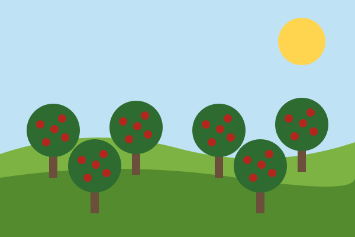
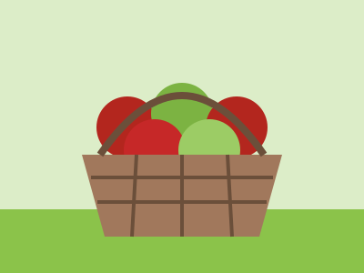

Orchard Travels
Every fall I hit the road to visit orchards across the country. Here are a few stops from this year's trip.



Planning Your Own Orchard Trip
- Check when your favorite variety is ripe (usually August to October).
- Call ahead. Many orchards close early when the trees are picked over.
- Bring cash, a bag, and comfortable shoes.
Helpful Links
- PickYourOwn.org: find orchards near you
- USDA National Agricultural Library: growing guides